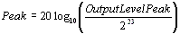
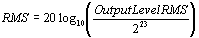

Retrieves the peak output and root mean square (RMS) levels for all digital channels of the current audio frame. The method also retrieves the analog left and right totals for the current audio frame.
HRESULT GetOutputLevels(
LPDSOUTPUTLEVELS pOutputLevels,
BOOL fResetPeakValues
);
Returns DS_OK if successful, an error code otherwise.
In this case, the length of the current audio frame is 256 samples (5 msec) using the Encode Processor. The length of an audio frame in the Voice Processor or the Global Processor is typically 0.667 msec.
The RMS is calculated over the last 256 samples. Peak level is the maximum amplitude out of a channel over the last audio frame.
Decibels are calculated from DWORDs as a ratio between the DWORD output level and the full scale amplitude (0 dBFS would be 2^23). To calculate decibel values for OutputLevelPeak, we would use the following formula:

Similarly, if you wanted to calculate RMS in decibels:

To calculate the value in millibels, simply use 2000 instead of 20.
Even though DirectSound allows you to set the minimum volume to –100 dB, the XBox audio hardware clamps to silence at –64 dB. Applications that read and display output levels (such as a VU meter) should scale between 0 dB and –64 dB.
Header: Declared in DSound.h.
Import Library: Use DSound.lib.